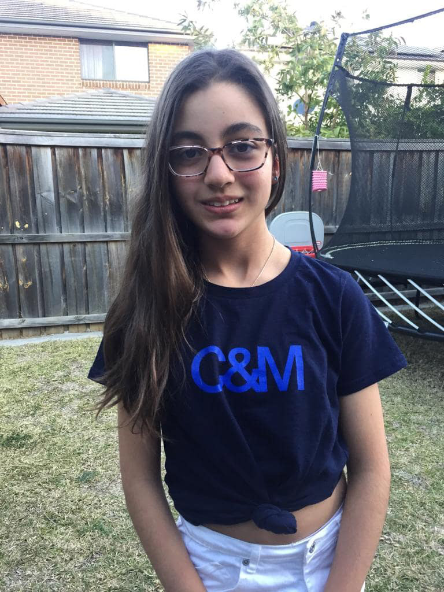

Lauren
Australia Cerebral PalsyThe saying 'I knew I could so I did' describes Lauren completely. From age 4 when she walked for the first time leaving her walking frame behind to the day she took her first steps on her new feet 9 weeks after surgery just last year age 11.
Cerebral Palsy is just part of her life. Lauren gets on with it, does what she needs to do and does it well. It's not easy by any means but she just gets on with it.
Lauren is truly inspirational and she'll do great things because she knows she can.
Get involved Back to all stories